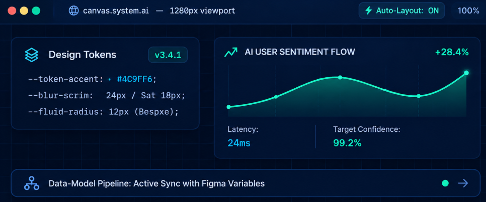
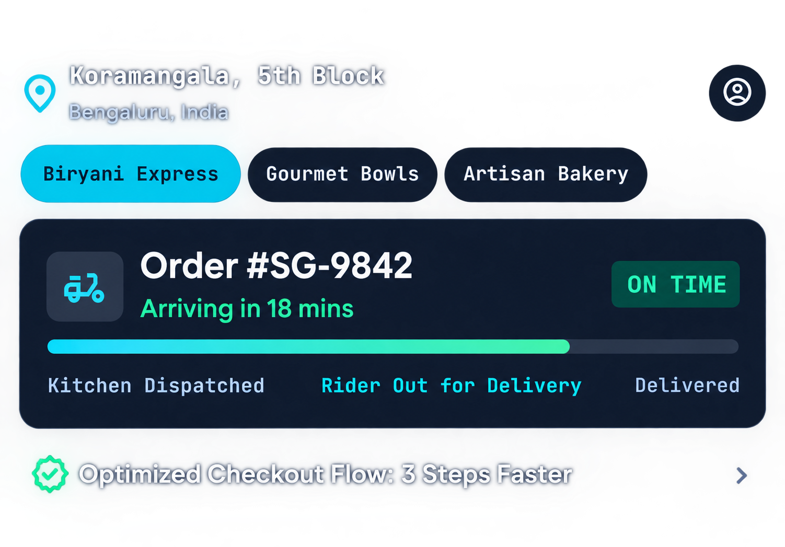

• UI & UX DESIGNER • AI & DATA SCIENCE
Designing Digital
Experiences
With
I'm Alisha Shah, a UI/UX-focused
technology student passionate
about creating clean, intuitive, and meaningful digitalexperiences.
I
combine design thinking, web technologies, and AI & Data
Science to turn ideas into user-focused
digital
products.

Where Design Meets Technical Precision
UI/UX Design
User-centered interfaces,
wireframes,prototypes and
visual design.
Web Development
Responsive websites using
modern front-end technologies
AI & Data Science
Technology-focused problem
solving and data-driven thinking.
Design Thinking
Research, ideation, prototyping
and continuous improvement.
Spotlight Project

ZEVRAYA UI & UX Recreation
ROLE
Lead UI/UX Designer & Researcher
A mobile food-delivery experience recreated in
Figma with a focus on intuitive navigation, visual
hierarchy, accessibility, and user-friendly
interactions.
Design System
METHODOLOGY
My Design Process
01
Discover
Empathize with users and unpack
problem spaces.
02
Reasearch
Competitor audits, qualitative
interviews & behavioral insights.
03
Define
User personas, journey mapping
&
core design goals.
04
Ideate
Information architecture, rapid
sketches & brainwriting.
05
Wireframes
Low-fidelity structural wireframes
and layout flows.
06
Prototype
High-fidelity interactive
components & micro-interactions.
07
Test
Usability validation, accessibility
checks & task-completion metrics.
08
Improve
Data-informed iterations and
design system standardization.
ABOUT SNAPSHOT
A Designer Who Thinks
Beyound the Interface
I enjoy understanding how people interact with digital
products
and transforming complex ideas into simple, intuitive experiences.
My learning journey
combines UI/UX, web development, AI and Data Science,
allowing me to approach problems from both creative
and technical perspectives.
Fields Synthesized
UI/UX, Web Dev., & AI Data
User-Obsessed
Empathetic Human Architecture
Informed UX
Quant & Qual Verified Systems
CREDENTIALS
Achievments & Certifications
2024
interactions Design Institute / Coursera
Mastered user-centered research, high-fidelity wireframing, component-driven design systems, and rapid prototyping.
View Certificate ↗
2023 - Present
University Technology Faculty
Focus on machine learning fundamentals, exploratory data analysis,
algorithmic thinking,
and predictive modeling.
View Certificate ↗
2023
Web Standards Academy
Core competencies in semantic HTML5, modern CSS3/Tailwind, JavaScript
ES6+, and responsive
UI engineering.
View Certificate ↗
COLLABORATION RADAR
Have an idea worth
designing ?
Let's turn your idea into a thoughtful digital experience.
ALISHA
Designing meaningful digital experiences through creativity, technology, and user-centered thinking.
ai_product_architect v2.4
DIRECTORY INDEX
Home
Skills
Experience
Resume
About
Project
Services
Contact
NETWORK NOTES
Github
Dribbble
alishashah7350@gmail.com
2024 Alisha Shah. Engineered with architectural precision.
Design System Tokens